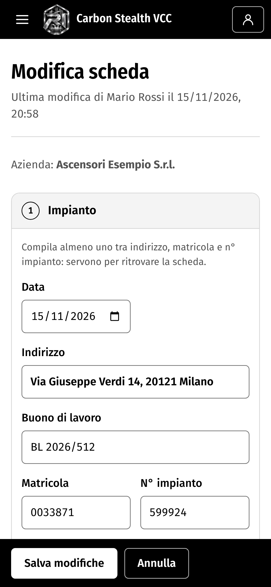
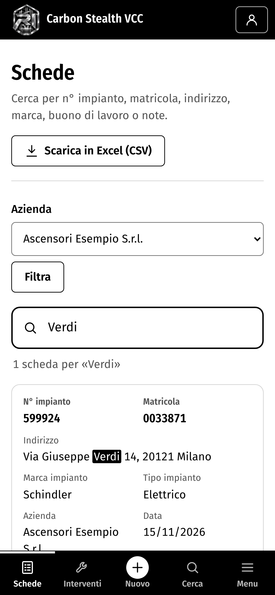
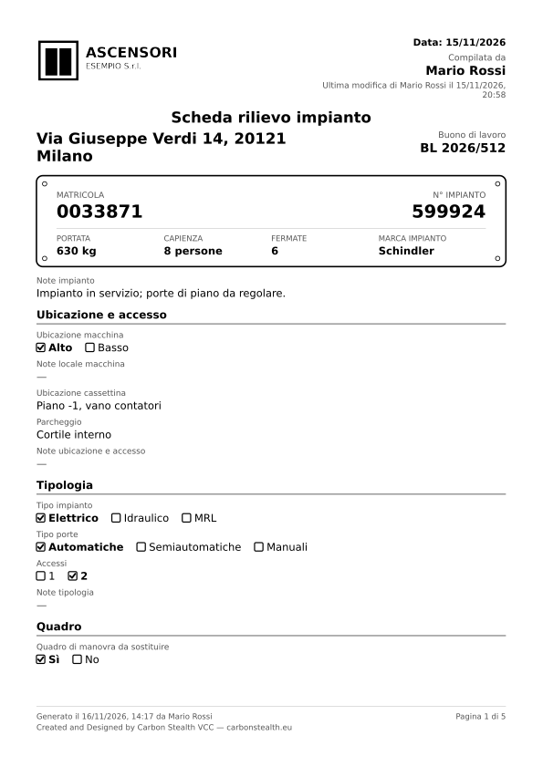
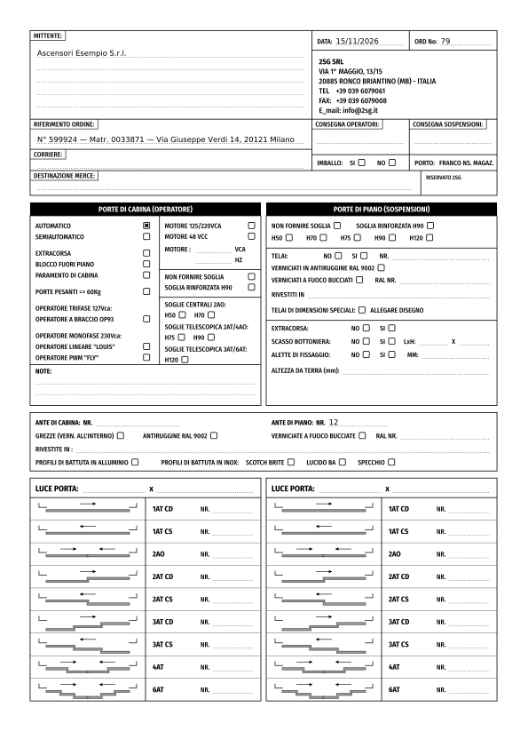
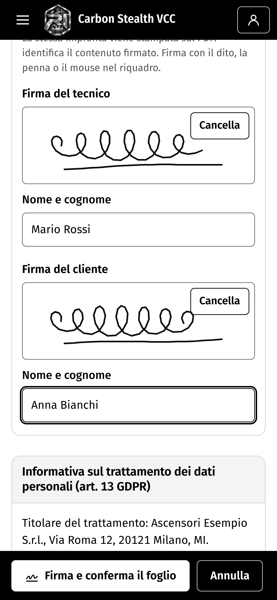
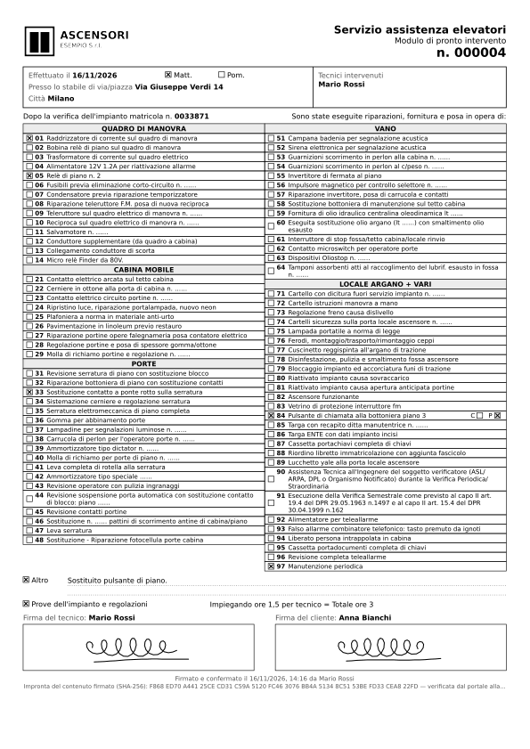
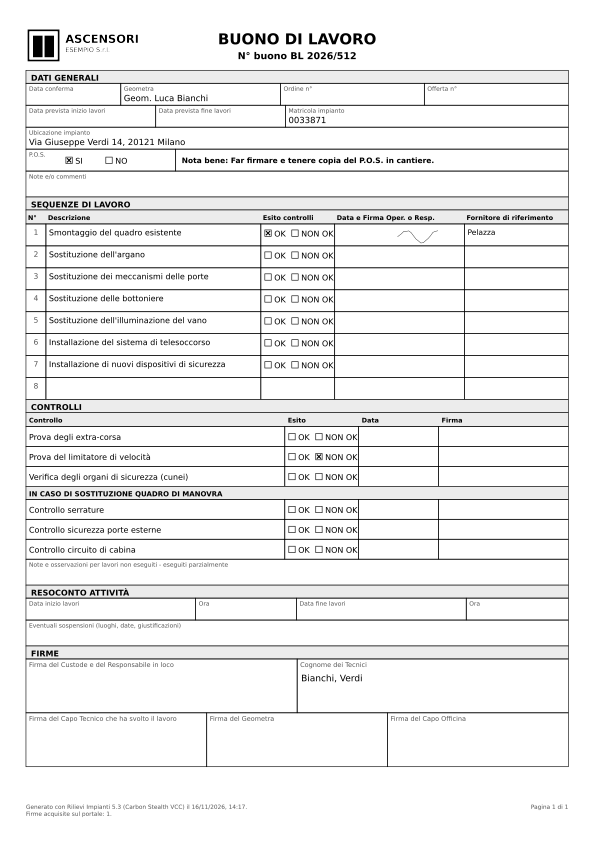

Il software web per le aziende di ascensori: la scheda di rilievo dal telefono, i moduli d'ordine dei costruttori, il foglio di intervento firmato, i cartelli e i documenti di cantiere.
Immagine: rendering 3D
rilievi.carbonstealth.euCarbon Stealth VCC Presentazione, novembre 2026
Che cos'è Rilievi Impianti
Un software web per le aziende di ascensori: compili la scheda di rilievo dal telefono, la ritrovi per matricola o indirizzo e la stampi in A4 o in PDF. Comprende foglio di intervento, buono di lavoro, verbale di chiusura cantiere, cartelli di fermo impianto e i calcoli di argano e limitatore.
1
Sopralluogo
Il tecnico compila la scheda dal telefono; se nel vano manca la rete, la scheda resta salvata sul telefono.
2
Ufficio
Trovi l'impianto per matricola o indirizzo e stampi la scheda con il tuo logo.
3
Ordini
I moduli d'ordine dei costruttori si compilano con i dati della scheda.
4
Assistenza
Foglio di intervento firmato sul telefono e cartelli di fermo impianto.
5
Cantiere
Buono di lavoro e verbale di chiusura cantiere, con le firme.
Immagine: rendering 3D di un tablet con il portale aperto.
Si apre nel browser
Il portale si apre su telefono, tablet e computer, senza installare nulla. Se vuoi, lo aggiungi alla schermata Home e si apre a schermo intero, come un'app.
Ogni azienda nel suo spazio
Schede, persone e logo di un'azienda li vede solo quell'azienda, oltre all'amministrazione del portale (Carbon Stealth). L'amministratore invita i colleghi, ognuno con il suo ruolo.
Con il logo della tua azienda
La scheda, il foglio di intervento e il cartello escono con il logo della tua azienda in alto.
La scheda di rilievo, dal telefono
I dati dell'impianto in una sola scheda: dalla targa al locale macchina, dalle funi alle bottoniere piano per piano.

La scheda sul telefono.

La ricerca: per numero impianto, matricola, indirizzo, marca, buono di lavoro o note.
Le sezioni della scheda
Impianto
Ubicazione e accesso
Tipologia
Quadro
Argano o centralina
Funi e tiranti
Limitatore
Cavi
Serrature, sospensioni o operatore
Allarme e telesoccorso
Bottoniere
Note e lavori
Schermate del portale con dati di esempio.
Pensata per il sopralluogo
Campi grandi, comodi anche con i guanti; l'unità di misura è già nel campo e la data del giorno è già scritta. Compaiono solo le domande che servono per quel tipo di impianto e di porte.
Anche senza rete
Se invii la scheda senza rete, resta salvata sul telefono fino a 7 giorni e la invii quando torna il segnale.
Foto, video e schizzi
Foto e video in ogni sezione, compressi in automatico; sulle foto puoi anche scrivere e disegnare. Gli schizzi a mano hanno quote e simboli del vano.
Nessuna modifica va persa
Se due persone modificano la stessa scheda, la seconda riceve un avviso. Le ultime 100 versioni restano consultabili; se vuoi, la scheda passa dall'approvazione di un responsabile prima dell'ordine.
Dalla scheda ai moduli d'ordine
Se il quadro va sostituito, la scheda compila il modulo d'ordine del costruttore: Pelazza, Movilift, DMG Pitagora 4.0, Mastech (NG120 o QI Touch), Elettroquadri e GEAT. Allo stesso modo prepara il modulo delle bottoniere DMG, la scheda dati dell'argano e il modulo 2SG per operatore e sospensioni.

La scheda in PDF A4, con il logo dell'azienda e il nome di chi l'ha compilata (pagina 1 di 5; dati di esempio).Il modulo d'ordine del quadro Pelazza, compilato con i dati della scheda.
Dalla scheda ai moduli, senza riscrivere
Molti dati dell'impianto, come fermate, velocità o matricola, passano da soli nei moduli che li chiedono, se non li hai già scritti tu. Se due valori non coincidono, il portale te lo segnala e prima di salvare ti chiede di confermare.
Il modulo parte dal portale
Ogni modulo esce in PDF e lo mandi al fornitore per email dal portale. Per le altre marche la scheda resta completa e il modulo lo compili a parte.
Scheda dati dell'argano.

Modulo 2SG per operatore e sospensioni.AMI 100 Mono RTBS, se fossa o testata sono ridotte.
Documenti generati dal portale con dati di esempio. I marchi citati appartengono ai rispettivi titolari.
Il foglio di intervento, firmato sul telefono
Come il blocchetto di pronto intervento: numerato per azienda, con le voci da spuntare, le prove e gli orari. Tecnico e cliente firmano con il dito.

Le due firme sul telefono (schermata del portale, dati di esempio).

Il foglio confermato, in PDF A4 (dati di esempio).
Chiuso dopo la firma
Dopo la conferma il foglio non si modifica più: esce in PDF A4 e lo mandi anche via email.
Anche senza rete
Se invii il foglio senza rete, resta salvato sul telefono fino a 7 giorni e lo invii quando torna il segnale. Le firme e la conferma, invece, si fanno con la rete.
Cartelli e documenti di cantiere
Lo stesso portale segue l'impianto anche dopo il sopralluogo e usa i dati che la scheda già contiene.
Il cartello di fermo impianto in PDF, con il logo e i dati dell'azienda in alto.

Il buono di lavoro in PDF.
Cartelli di fermo impianto
Cinque modelli pronti, con il logo e i dati della tua azienda in alto. Se l'impianto ha una scheda, indirizzo, città e testo per gli utenti si compilano da soli in base ai lavori previsti; per un impianto senza scheda li scrivi a mano.
Buono di lavoro
Raccoglie le lavorazioni, i controlli e le firme; quelle che non fai sul telefono le metti a mano sul foglio stampato.
Verbale di chiusura cantiere
Lo firmano tecnico e supervisore ed esce in due copie PDF, per l'azienda e per l'installatore.
Calcoli, persone e dati
Il calcolo dell'argano in PDF (pagina 1 di 2; dati di esempio).
Calcolo dell'argano
Sul modello RT-E MOD 10411-1: velocità, funi, aderenza, pressione specifica. Parte dai dati del rilievo.
Calcolo del limitatore
Dalla velocità nominale e dal tipo di paracadute ricava i limiti della velocità di intervento V1 (impianti elettrici a fune), secondo la norma che la UNI 10411-1:2024 o la UNI 10411-11:2024 indica per la modifica scelta.
Va firmato da un tecnico abilitato
Ogni foglio riporta i dati usati e va controllato e firmato da un tecnico abilitato: senza la sua firma non ha valore. Il calcolo aiuta a controllare l'impianto, ma non sostituisce il progettista.
Ruoli e permessi su misura
In ogni azienda ci sono 6 ruoli: decidono chi consulta, chi compila, chi elimina e chi invita. L'amministratore li rinomina e sceglie cosa possono fare con schede, interventi e registro i ruoli sotto il suo; nel registro, chi ha il permesso vede le proprie operazioni e quelle dei ruoli sotto il suo.
Accesso protetto
Si entra solo su invito. Se vuoi, attivi anche la verifica in due passaggi: oltre alla password, un codice da un'app sul telefono.
Dati nell'Unione europea
I dati sono su server nell'Unione europea, con una copia di sicurezza ogni giorno.
I dati restano tuoi
L'amministratore scarica quando vuole tutti i dati dell'azienda in un unico file, anche per passare a un altro fornitore, senza costi. Ci sono anche l'esportazione in Excel (CSV) e un'API in sola lettura.
Come iniziare
L'accesso è su richiesta: ogni azienda entra con il suo amministratore, che poi invita i colleghi.
1
Invii la richiesta
Dal sito: bastano nome, azienda ed email.
2
La verifichiamo
Leggiamo la richiesta e prepariamo lo spazio della tua azienda.
3
L'amministratore riceve l'invito
Sceglie la password; quando accetta le condizioni inizia il mese di prova gratuita.
4
Invita i colleghi
Tecnici e ufficio, ognuno con il suo ruolo.
Quanto costa
Il primo mese è gratuito, con tutte le funzioni. Poi scegli un piano in base al numero di persone: fino a 10, fino a 25 oppure oltre 25. Si paga in anticipo e non si rinnova da solo; i prezzi, IVA esclusa, sono su rilievi.carbonstealth.eu/prezzi.
Se l'abbonamento scade
Il portale passa in sola lettura: vedi, stampi e scarichi tutto, ma non crei né modifichi dati. Nessun dato viene cancellato e con un nuovo piano tutto torna come prima.
Inquadra il codice e richiedi l'accesso.rilievi.carbonstealth.eu
+39 379 29 69 699 info@carbonstealth.eu Carbon Stealth VCC, P. IVA BG208725180 I marchi citati appartengono ai rispettivi titolari.